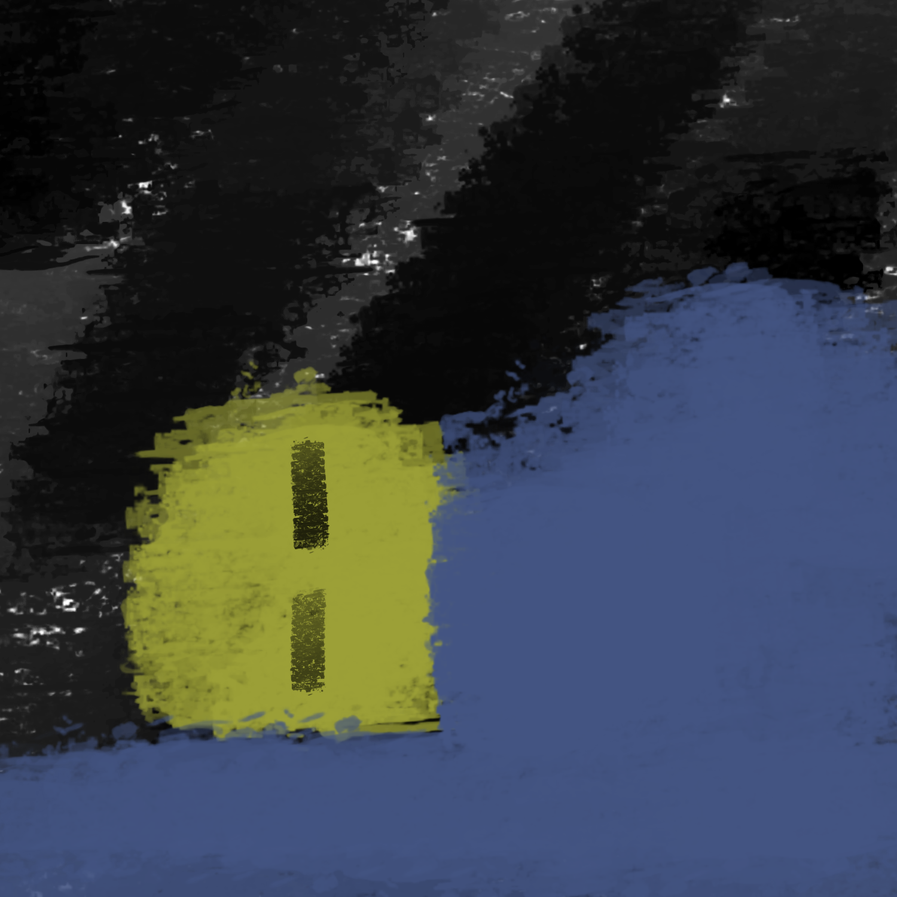

*You are now at the Hospital and taken to your bed. It is midnight, and you are tired. Everyone is sleeping, and you want to do the same. Suddenly the nurse walks in and asks you to explain your case. After you explain, she tells you that she has seen this so many times before, and urges you to listen to the staff members if you want to shorten your time in the facility.* This can't be normal, and there is no way you've seen this before. There's literally a blue demon following me! He's here now! *She tells you to listen to her and the other professionals, and that the best
will follow suit. You have no choice but to listen. The nurse now guides you to a smaller room. It seems like you're being quarantined. There are two others in the room, and of course, they're asleep. You finally manage to get some shut
eye, but at 6:30 AM two nurses come in to check your pulse. They wake you up, but you keep your eyes closed, appearing asleep. (For this part im thinking of like the nurse saying to just listen to what the staff said, which is kinda like giving
an hint?)